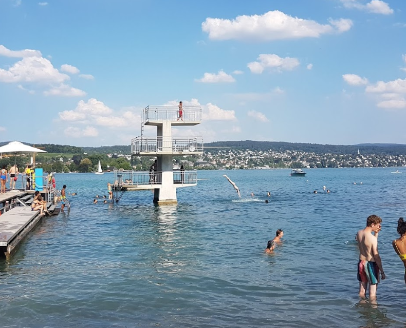
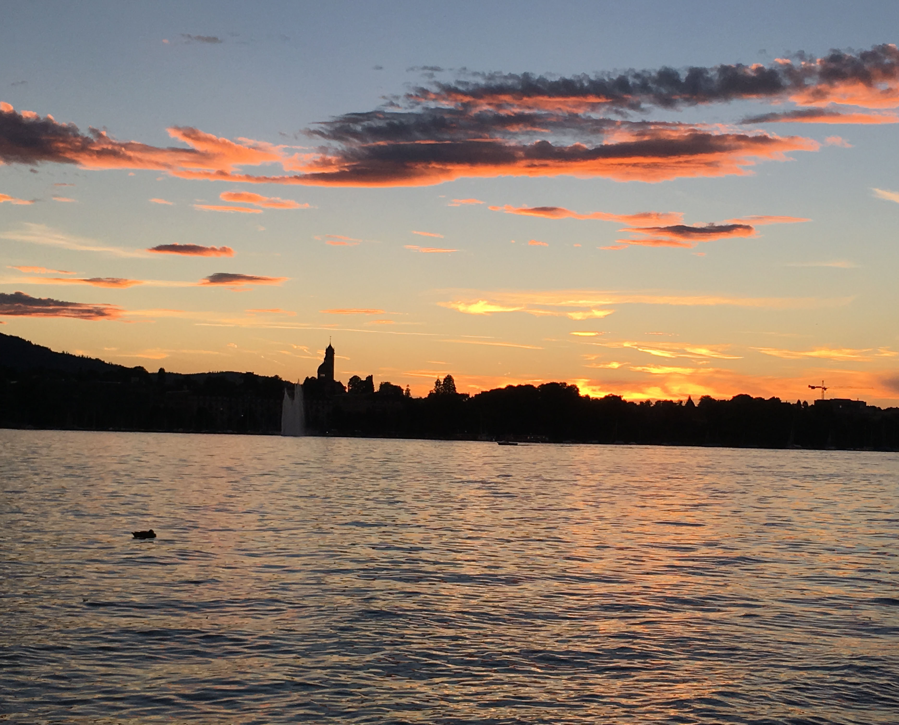
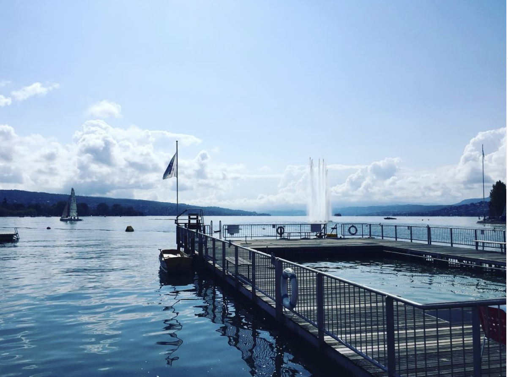
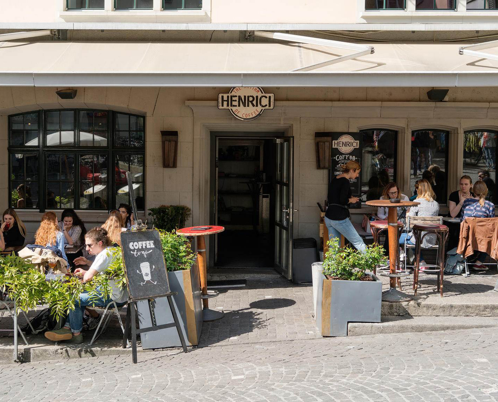
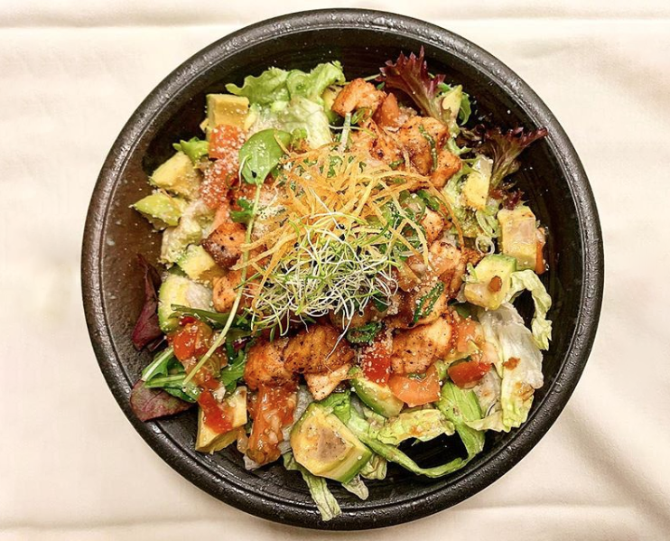
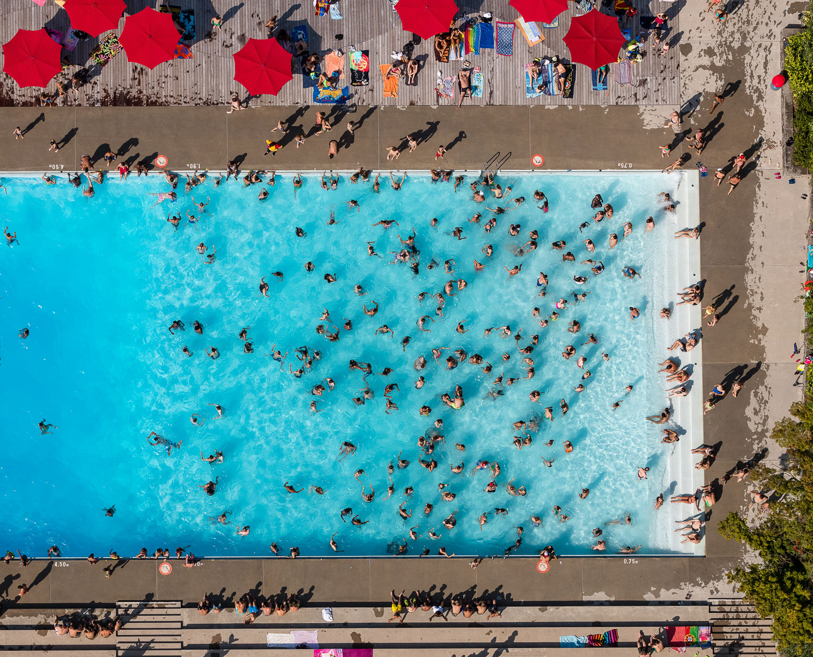
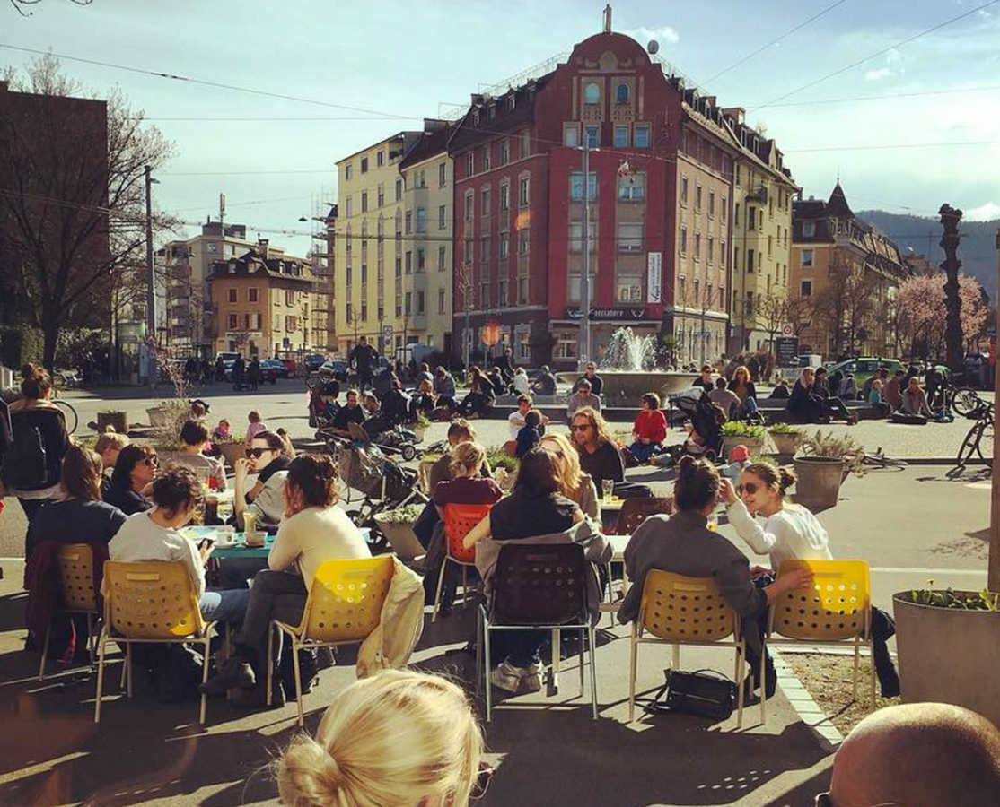
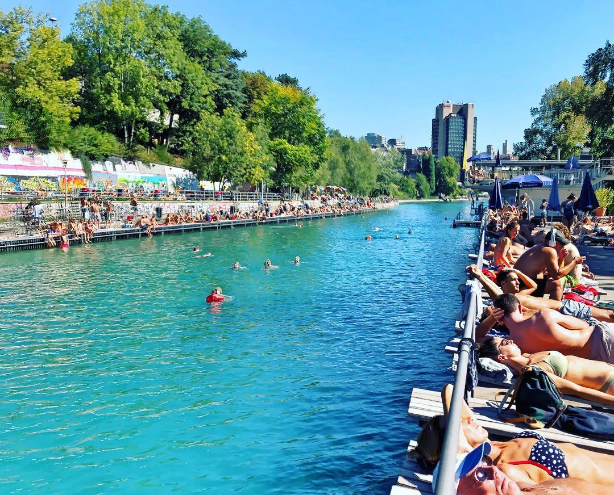
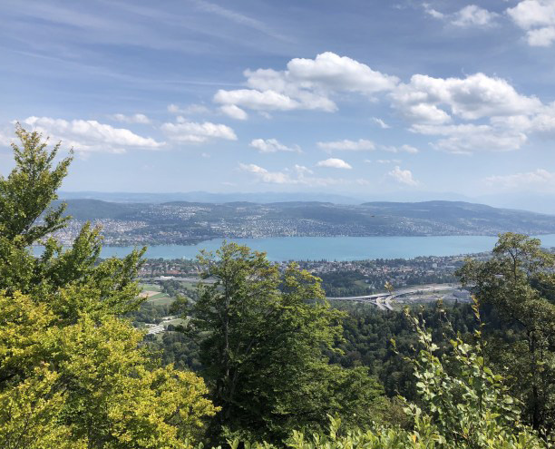

Frischer Fritz

Relax at Fischers Fritz, directly on Lake Zurich, while tucking into some tasty “Fischchnusperli”. They have a mix of it all: Restaurant, beach, camping, beach sports, shop and fishery.
Rote Fabrik

Rotefabrik has it's options of what to do there, have an apero, watch a concert or hop into the lake from one of their diving boards. It's a beautiful view of the lake and a nice place to dive in if it's too hot for an apero.
Saffa Insel

Over at wollishofen you can cross the little bridge and relax on the Saffa Insel. There is plenty of choices to find your perfect sunbathing area or perch under a large tree for shade.
Fork & Bottle

Known for being Zurich's only farm-to-table restaurant offering an ever-changing menu of craft beer, Fork & Bottle invites you in to enjoy great food and drink in a relaxed country setting.
Mythenquai

This lakeside open-air public swimming bath, with its non-swimmer area and water fountains, is particularly suitable for children. It has a sandy beach and grassy sunbathing area. Stand up paddles are also available for rent here.
China Garden

It is a great place to get into the lake from the golden coast. There is plenty of spots along the lake shore or enjoy the large 'wiese' and lay in the grass. There is a picking of spots if your looking to hide under the shade. And plenty of BBQ's and music around to hear.
Samigo

Looking to fuel your senses and a place to enjoy a drink but with a spice. At Samigo you can expect a unique experience of drag-queens,fire-eaters, burlesque dancers and international food and drinks.
Rieter Park
The Rieterpark is Zurich's largest and most impressive landscape garden and is located in the Zurich Enge area of the city, not far from Lake Zurich.
Panorama Weg

The perfect place to get the top views of Zurich a nice trail that is just the hike you need on an evening. Enjoy a picinic at the top, or escpae the cloudy evening in spring and fall and get above the clouds.
Ginetta Terrace

Every Thursday when the sun is shining you can find ginetta enjoying there apero on the terrace. In the summer you might even encounter a sprinkler fight.
Hafen Enge Kiosk

A nice place at the lake to have a morning coffee with a view or an evening apero. In case the line or crowd is too large at Seebad Enge, the kiosk is a perfect place to grab a snack or drink.
Seebad Enge

A visit to the seaside resort of Enge with its unique location on Lake Zurich and its alpine panorama is an experience all year round. Perfect for you all year round depending on the season as a bathing establishment, restaurant or sauna on the lake.
Rentenwiese
A popular spot to go lay in the sun and hide under some shade. There is a little stony beach that gives easy access to slowly enter the lake.
Rimini Bar

Nested away along the Sihl you'll find Rimini Bar, a great place to enjoy a cocktail and some refreshments. Here, guests chill out on oriental cushions and enjoy grilled specialties and sip on cool drinks.
Lindenhof

A nice place to get a good view of the old town. A good place for dates or to take visitors. "‘Especially magical on a sunny Autumn day when you can walk across a carpet of crisp leaves under bright amber trees!’ - Louise
Henrici Cafe

This modern café in Zürich’s Niederdorf is completely devoted to coffee. Drinking coffee is a true experience at Heinrici, where there is everything from classic coffees to creative coffee cocktails to choose from. In addition, exquisite baked creations will add a sweet complement to select, aromatic coffee varieties
Golosone

A nice italian restaurant in the city center. Tasty dishes and big portions makes it the perfect place to go with friends. Great location and good food.
Rio Bar

A unique garden bar right next to Zürich Main Station, surrounded by old trees, a river confluence, and a big intersection.
Kino Xenix
A nice place to go for a drink and to hangout with friends, there is also a park and sometimes live music. And if it's a rainy day it's also the place to go to watch an art-house movie
Bäckenerlage

The "Bäcki" park is one of the most beautiful green areas in the city of Zurich. Near langstrasse, it's a nice place to relax and everyone once in a while expereience open air concerts, it is a recreational paradise.
The Bite

"Best burgers in town"
Kokoro

"My favorite Japanese restaurant." - Simon
Badi Letzigraben

Enjoy three different swimming pools one for divers, one for swimming laps, and another for the little ones. Letzibad has a large green space in between each of the pools to sunbathe or soak up some sun.
Bullingerplatz

A great spot nooked into the city and the neighborhood. Enjoy sitting around the fountain at Bullingerplatz, or at the Cafe Bonhuer and enjoy a delicous brunch or an easy drink in the evening.
Josefwiese
This park, which is highly popular among the locals, is situated next to the viaduct in the trendy Zurich-West quarter. Whether soccer, pétanque, table tennis or or families with children – when the weather is fine, everyone convenes in the Josefwiese park.
Oberer Letten

Super close to the main station is the Oberer Letten swimming area. It's a popular meeting place and a good spot to hop in at the top of the river if you want to float down for a stretch. There are sun terrraces and a bar nearby.
Unterer Letten

Jump into the river and float away with the current. This is a popular gathering for Zurich locals. If it get's too crowded you can find a little river nook along the way.
Stadion Brache 'The Beast'

At Stadionbrache you will find good vibes, it is a verein that has gardens, a stone brick oven, and a DIY skatebowl. Skateboard, grill, hang out, explore the gardens. A little oasis for skaters and freaks alike. Bring your friends to bake a pizza and hang in the garden or kick back and watch the skaters do their thing. It's a beauty.
Limmat Nook

One of those perfect Limmat river nooks. Looking for somewhere away from the crowd to just sit in the river, this is a good option. This rocky island is great to sit in the water without floating away.
Limmat Nook

If your floating down the Limmat or searching for somewhere to dip in. This spot on the limmat is nice to rest and meditate on the rocks, or hop in a little bit earlier and swim to the rocks.
Werd Insel

Another island is zurich but along the river. It's also the perfect spot to start your river float down the letten with a 'gummi boot' and float all the way down to Dietikon.
UX meetups at Dynamo

We meet every first Wednesday of the month. UX Happy Hour is all about meeting other designers. It's an informal event and it's open to anyone who's interested in design. Developers, PMs and founders are all welcome! There aren't any talks or workshops, it's just designers hanging out.
Dolder Trail

Take the tram to Dolder and walk in the forest late in the evening, best in winters, and enjoy a fondue at restaurant Degenried.
Dolder Bad

Dolder Bad is situated high on the Adlisberg in idyllic natural surroundings. In addition to the outdoor pool, there is a tree-lined lawn with areas for sport and sunbathing, a children’s play area, two paddling pools and a sandpit, as well as four table tennis tables and a volleyball pitch.
Katzensee

A nice place to go escape the Zurichsee crowd. Also nice to lounge at different parts of the lake and not their designated Badi. You can also take a hike around the lake and have beautiful views along the way!